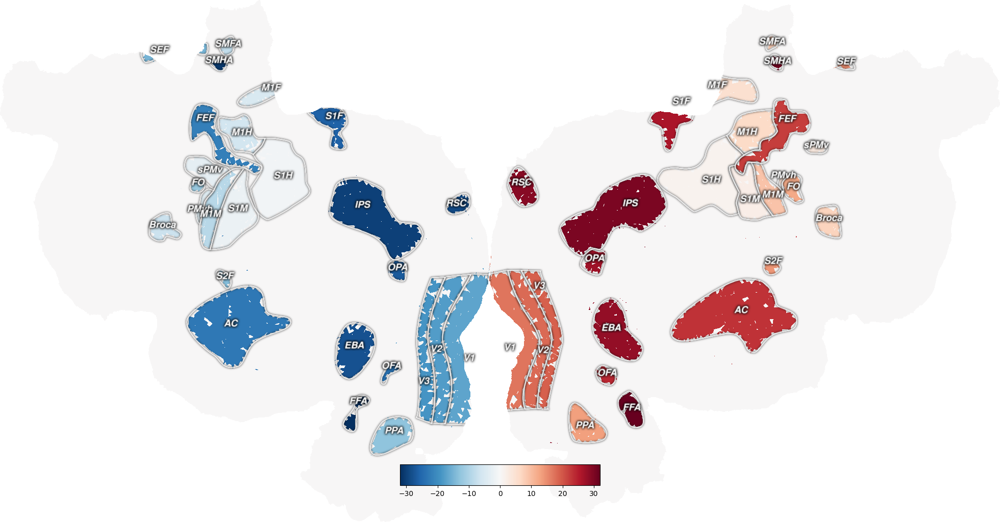

Note
Go to the end to download the full example code.
Get ROI Index Volume¶
Create an index volume (similar to the aseg masks in freesurfer) with a different integer index for each ROI. ROIs in the left hemisphere will have negative values, ROIs in the right hemisphere will have positive values.
/home/runner/work/pycortex/pycortex/cortex/svgoverlay.py:499: UserWarning: Requested layer in svg file (V3A) contains no splines
warnings.warn("Requested layer in svg file (%s) contains no splines"%self.name)
/home/runner/work/pycortex/pycortex/cortex/utils.py:508: UserWarning: No vertices found in V3A!
warnings.warn("No vertices found in {}!".format(name))
/home/runner/work/pycortex/pycortex/cortex/svgoverlay.py:499: UserWarning: Requested layer in svg file (V3B) contains no splines
warnings.warn("Requested layer in svg file (%s) contains no splines"%self.name)
/home/runner/work/pycortex/pycortex/cortex/utils.py:508: UserWarning: No vertices found in V3B!
warnings.warn("No vertices found in {}!".format(name))
/home/runner/work/pycortex/pycortex/cortex/svgoverlay.py:499: UserWarning: Requested layer in svg file (LO) contains no splines
warnings.warn("Requested layer in svg file (%s) contains no splines"%self.name)
/home/runner/work/pycortex/pycortex/cortex/utils.py:508: UserWarning: No vertices found in LO!
warnings.warn("No vertices found in {}!".format(name))
/home/runner/work/pycortex/pycortex/cortex/svgoverlay.py:499: UserWarning: Requested layer in svg file (V4) contains no splines
warnings.warn("Requested layer in svg file (%s) contains no splines"%self.name)
/home/runner/work/pycortex/pycortex/cortex/utils.py:508: UserWarning: No vertices found in V4!
warnings.warn("No vertices found in {}!".format(name))
/home/runner/work/pycortex/pycortex/cortex/svgoverlay.py:499: UserWarning: Requested layer in svg file (V7) contains no splines
warnings.warn("Requested layer in svg file (%s) contains no splines"%self.name)
/home/runner/work/pycortex/pycortex/cortex/utils.py:508: UserWarning: No vertices found in V7!
warnings.warn("No vertices found in {}!".format(name))
/home/runner/work/pycortex/pycortex/cortex/svgoverlay.py:499: UserWarning: Requested layer in svg file (IFSFP) contains no splines
warnings.warn("Requested layer in svg file (%s) contains no splines"%self.name)
/home/runner/work/pycortex/pycortex/cortex/utils.py:508: UserWarning: No vertices found in IFSFP!
warnings.warn("No vertices found in {}!".format(name))
Found 100.00% of S1H
Found 100.00% of S1M
Found 100.00% of sPMv
Found 100.00% of PMvh
Found 97.46% of M1F
Found 100.00% of M1H
Found 100.00% of Broca
Found 100.00% of SMFA
Found 100.00% of M1M
/home/runner/work/pycortex/pycortex/cortex/utils.py:802: RuntimeWarning: Mean of empty slice.
pct_coverage[roi] = vert_in_scan.mean() * 100
/opt/hostedtoolcache/Python/3.9.19/x64/lib/python3.9/site-packages/numpy/_core/_methods.py:138: RuntimeWarning: invalid value encountered in scalar divide
ret = ret.dtype.type(ret / rcount)
Found nan% of V3A
Found nan% of V3B
Found 100.00% of FO
Found 100.00% of PPA
Found 100.00% of S2F
Found 91.46% of SEF
Found nan% of LO
Found 98.03% of V1
Found 100.00% of V2
Found 100.00% of V3
Found nan% of V4
Found nan% of V7
Found 100.00% of FEF
Found 99.92% of AC
Found 100.00% of OFA
Found nan% of IFSFP
Found 97.23% of S1F
Found 100.00% of OPA
Found 100.00% of EBA
Found 100.00% of RSC
Found 100.00% of IPS
Found 100.00% of SMHA
Found 100.00% of FFA
Cutting 0 overlapping voxels (should be < ~50)
/home/runner/work/pycortex/pycortex/cortex/utils.py:855: UserWarning: ROI M1F is only 97.46% contained in your scan protocol!
warnings.warn('ROI %s is only %0.2f%% contained in your scan protocol!'%(roi, pct_coverage[roi]))
/home/runner/work/pycortex/pycortex/cortex/utils.py:855: UserWarning: ROI AC is only 99.92% contained in your scan protocol!
warnings.warn('ROI %s is only %0.2f%% contained in your scan protocol!'%(roi, pct_coverage[roi]))
/home/runner/work/pycortex/pycortex/cortex/utils.py:855: UserWarning: ROI V1 is only 98.03% contained in your scan protocol!
warnings.warn('ROI %s is only %0.2f%% contained in your scan protocol!'%(roi, pct_coverage[roi]))
/home/runner/work/pycortex/pycortex/cortex/utils.py:855: UserWarning: ROI S1F is only 97.23% contained in your scan protocol!
warnings.warn('ROI %s is only %0.2f%% contained in your scan protocol!'%(roi, pct_coverage[roi]))
/home/runner/work/pycortex/pycortex/cortex/utils.py:855: UserWarning: ROI SEF is only 91.46% contained in your scan protocol!
warnings.warn('ROI %s is only %0.2f%% contained in your scan protocol!'%(roi, pct_coverage[roi]))
Background RRGGBBAA: ffffff00
Area 0:0:1960.5:1024 exported to 1960 x 1024 pixels (96 dpi)
Index keys for which ROI is which in `index_volume`:
{'S1H': 1, 'S1M': 2, 'sPMv': 3, 'PMvh': 4, 'M1F': 5, 'M1H': 6, 'Broca': 7, 'SMFA': 8, 'M1M': 9, 'V3A': 10, 'V3B': 11, 'FO': 12, 'PPA': 13, 'S2F': 14, 'SEF': 15, 'LO': 16, 'V1': 17, 'V2': 18, 'V3': 19, 'V4': 20, 'V7': 21, 'FEF': 22, 'AC': 23, 'OFA': 24, 'IFSFP': 25, 'S1F': 26, 'OPA': 27, 'EBA': 28, 'RSC': 29, 'IPS': 30, 'SMHA': 31, 'FFA': 32}
import cortex
import numpy as np
import matplotlib.pyplot as plt
subject = "S1"
xfm = "fullhead"
# Get the map of which voxels are inside of our ROI
index_volume, index_keys = cortex.utils.get_roi_masks(subject, xfm,
roi_list=None, # Default (None) gives all available ROIs in overlays.svg
gm_sampler='cortical-conservative', # Select only voxels mostly within cortex
split_lr=True, # Separate left/right ROIs (this occurs anyway with index volumes)
threshold=0.9, # convert probability values to boolean mask for each ROI
return_dict=False # return index volume, not dict of masks
)
lim = np.max(np.abs(index_volume))
# Plot the mask for one ROI onto a flatmap
roi_data = cortex.Volume(index_volume, subject, xfm,
vmin=-lim, # This is a probability mask, so only
vmax=lim, # so scale btw zero and one
cmap="RdBu_r", # Shades of blue for L hem, red for R hem ROIs
)
cortex.quickflat.make_figure(roi_data,
thick=1, # select a single depth (btw white matter & pia)
sampler='nearest', # no interpolation
with_curvature=True,
with_colorbar=True,
)
print("Index keys for which ROI is which in `index_volume`:")
print(index_keys)
plt.show()
Total running time of the script: (0 minutes 22.503 seconds)